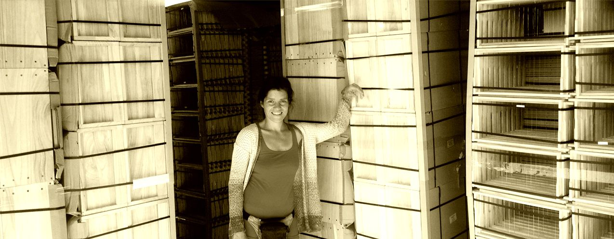

LEADER

„ BLU-BI “ Das mobile Blumen- und Bienenklassenzimmer für Kinder und Erwachsene „ Die BIENEN und WILDPFLANZEN kommen“ In dem Projekt entsteht ein neues, nachhaltiges Umweltbildungsangebot mit Modellcharakter für die Region. Inhaltlich soll es zwei Themenschwerpunkte geben, die sich gegenseitig unterstützen und ergänzen: Das Wissen um die Zyklen der Natur und um die Funktion und Nutzung von Wildpflanzen, Obstbäumen und Büschen, Naturgärten, Permakultur, sowie dem Wert und Nutzen des Erhaltens geschützter Arten. Das Wissen um das Imkerhandwerk und die Funktion von Bienen und ihrem Wert für die Natur und den Menschen. Im Rahmen des mobilen Blumen- und Bienenklasenzimmers BLU-BI werden in diesem Herbst 60 Bienebeuten an verschiedenen Standorten bei Gastgebern in den Gärten der umliegenden Dörfer aufgestellt und in Zusammenarbeit mit der Imkerin Giesla Paasch aus Gnevkow mit Bienen bestückt. Die Gastgeber erhalten eine Einführung in das Imkerhandwerk in Form eines freiwilligen mehrstündigen Schnupperkurses zum Thema Bienen, Honig und Imkern. Daneben wird eine mobiles Klassenzimmer in Form eines ausgebauten Bauwagens gebaut und in einem Wildpflanzen- und Permakulturgarten in Wietzow aufgestellt, der als Bildungsort benutzt werden soll und Besucher einlädt. In diesem Bildungsraum wird es Experimentierflächen und Möglichkeiten der Pflanzenbearbeitung für Kinder und Erwachsene geben, wie z.B. kinderfreundliche Pflanzenpressen zur Erstellung von Herbarien, ein Solar-Trockenschrank für Früchte, Blätter, Blüten und Samen, eine kleine Destillieranlage zur Gewinnung von duftenden Pflanzenproben, Bienen & Wildpflanzenliteratur und Bienen-Anschauungsmodelle. Im mobilen Klassenzimmer Blu-Bi werden dann ab Frühjahr 2019 Veranstaltungen zum Thema Bienen und Imkerhandwerk, Wildpflanzen, Permakultur, Wildgärten, Pflanzenverarbeitung und Konservierung, Naturkosmetik sowie kreative Naturworkshops angeboten. Ebenso können Kleingruppen, Kitas und Schulklassen eine Veranstaltung im BLU-Bi zu den entsprechenden Themen buchen. Eine entsprechende Webseite, die über das Projekt und alle Termine informiert, wird bis Ende des Jahres fertig gestellt und der Öffentlichkeit bekannt gegeben. Durch das Mitmachen in Form der Workshops und der Möglichkeit, Bienenbeuten mit Hilfe des Projektes bei sich zu Hause oder im eigenen Dorf aufzustellen, soll die Verantwortung für unsere gemeinsamen naturnahen Lebensräume kreativ angeregt werden. Durch die Vernetzung sowie gemeinschaftlich angelegte Kooperation der Bevölkerung soll das Bewusstsein für den Erhalt unserer Biodiversität und die Fülle die sie uns schenkt vermittelt und erinnert werden. Die Veranstaltungen, Schau- und „Mitmachtage“ sollen ein attraktives, familienfreundliches Touristenziel für Erwachsene und Kinder in die ländliche Region sein und Interesse am Imkerhandwerk und am Wert unserer Pflanzendiversität wecken. Das Wissen und die Artenkenntnis von Wildpflanzen, geschützter Sorten und Wachstumszyklen soll ein Verständnis in die Gesamtzusammenhänge der Natur vermitteln. Dabei wird der Fokus auf ein gemeinsames praktisches Ausprobieren, Forschen und Mitmachen gelegt. Der Bildungsort Da mobile Klassenzimmer und Umweltmobil BLU-BI wird in dem Dorf Wietzow stationiert sein, das an das weite Tollensetal und seine unberührten und unter Landschaftschutz stehenden Flächen angrenzt. Das Projekt wird finanziert aus den EU-Fördermitteln des LEADER FONDS „LAG Flusslandschaft Peenetal“ und den VORPOMMERN FOND.Projektinitiatorin und Ansprechpartnerin ist Gracja Maria Birmes. Kontakt für weitere Infos: www.foodnaturebody.com oder tel: 01627250588
Tollensetaler Stimme 2018/09, S. 13
„Wir leben hier und laden ein“
Einwendung gegen die Ausweisung der Eignungsgebiete für Windenergienutzung im Rahmen der dritten Beteiligung zum Entwurf der Zweiten Änderung des RREP Vorpommern im Einzugsgebiet der LEADER-Aktionsgruppe „Flusslandschaft Peenetal“Durch die LEADER Aktionsgruppe „Flusslandschaft Peenetal“ wurde im Rahmen des LEADER Prozesses, mit breiter Bürgerbeteiligung, eine „Strategie für Lokale Entwicklung“ für die Amtsbereiche Jarmen/Tutow, Peenetal/Loitz, Züssow, Anklam Land und die Stadt Anklam erstellt. Diese wurde durch das Ministerium für Landwirtschaft, Umwelt und Verbraucherschutz M-V bestätigt und ist Grundlage für die Ausweisung dieser Gebiete als LEADER-Region in Mecklenburg-Vorpommern. Im Leitbild sind folgende Grundsätze verankert: „Für die LEADER-Region Flusslandschaft Peenetal wird eine Entwicklung angestrebt, die dazu beiträgt, • die materiellen und ideellen Lebensbedingungen für die Menschen in der Region zu verbessern, • das Naturpotential der Region nicht nur zu erhalten, sondern weiter zu entwickeln und • die für die Verwirklichung der Ziele im sozialen und im Umweltbereich zum Teil notwendige wirtschaft- liche Basis zu stärken.“ Der Bau von Windkraftanlagen in oben genannten Gebieten steht diesen Entwicklungszielen entgegen. Die natürliche Eigenart der Landschaft, die Ästhetik und ihr Erholungswert würden grob fahrlässig beeinträchtigt und das Landschaftsbild grob unangemessen verunstaltet. Windkraftan- lagen auf oben aufgeführten Gebieten würden eine erhebliche Beeinträchtigung der Lebensqualität und einen unverantwortli- chen Eingriff in das Ökosystem bedeuten. Die Gebiete, auf denen bereits Windkraftanlagen errichtet wurden, gelten wegen dieser Windkraftanlagen in der Rechtsprechung und auch bei zuständigen Planungsverantwortlichen als (vor)geschädigte Gebiete. Gesundheitsgefahren durch Infraschall sind nicht auszuschließen. Allgemein anerkannt ist, dass Windkraftanlagen gesundheitliche Gefahren durch Schall erzeugen. Man unterscheidet zwischen hörbaren Schall von 20 -20 000 Hz und unhörbaren Lärm von 0 – 20 Hz. Das Rotieren in großer Höhe löst beim Menschen evolutionär bedingt großes Unbehagen aus. Der Mensch findet in einer solchen Umgebung keine Stille und Ruhe. Ohne diese ist eine Erholung nicht möglich. Dies steht dem Ziel entgegen, in der Region einen sanften Tourismus zu entwickeln. Immobilien in der Nähe von Windkraftanlagen sind fast unverkäuflich. Oft muss ein erheblicher Abschlag hingenommen werden. Der Immobilienwert wird deutlich gemindert. Die wirtschaftliche Basis wird geschwächt. In der LEADER-Region „Flusslandschaft Peenetal“ gibt es 8 Naturschutz-, 11 Landschaftsschutz- und 9 FFH Gebiete. Viele geschützte Arten, wie Fledermäuse, Rotmilan und Weißstorch sind hier beheimatet. Das Gebiet ist Rast- und Sammelplatz für mehrere tausend Gänse und Kraniche. Dies wird durch den Bau von Windkraftanlagen beeinträchtigt und ist ein nicht hinzunehmender Eingriff in das Naturpotential der Region. Der Vorsitzende, die anwesenden Stellvertreter/innen und die Regionalmanagerin der LAG „Flusslandschaft Peenetal“
Tollensetaler Stimme 2017/09, S. 9
Nur mal kucken? – Jepp, willkommen!
Ein LEADER-Projekt der neuen Förderperiode heißt „Wilder Park Drosedow“. Der Park war vom Kriegsende an sich selbst überlassen – bis auf kurze Episoden des Einfalls von ABMHorden eingangs der 90er. Es gibt noch einen ursprünglichen Baumbestand von mehr als 300 Jahre alten Eichen und Linden, teilweise als Naturdenkmale ausgewiesen. Der Park entwickelte bereichsweise Waldcharakter im Klimaxstadium. Auf der Fläche des ehemaligen Gutshauses (1962 als baufällig abgerissen, dann Stellplatz für LPG-Fuhrpark, dann Wiese) legten wir eine Streuobstwiese an, bauten einen Pavillon mit Bänken, eine Insektenwand, eine Trockenmauer, einen Barfußfühlpfad und legten einen Steinkreis. Der Park ist über eine kurze Lindenallee mit dem alten Friedhof verbunden, auf dem noch der letzte schwedische Pächter begraben liegt. Bis auf 2 Wege lassen wir den Park weiter „verwildern“, umgestürzte Bäume bleiben liegen. Wir erreichen damit eine Zunahme der Biodiversität (Pilze, Insekten, Frühblüher, Brutvögel, Fledermäuse...). Die Artenvielfalt wollen wir weiter ausbauen, Wildnis erlebbar machen. Wir planen das Ausbaggern des sonst verlandenden Teiches, für den der WBV schon eine neue Rückstaumöglichkeit gebaut hat. Der Teich wird dann ganzjährig einen schönen Wasserstand haben. Weiterhin wollen wir den Park einzäunen, um eine natürliche Waldverjüngung zu ermöglichen, wir planen eine neuen Eingangssituation mit Willkommenstor als skulpturelles Kunstwerk, werden Bänke und Schautafeln bauen. Ein internationales Jugend-Workcamp soll in die Realisierung eingebunden werden... Kleine Schritte für unseren Verein, aber große für die Menschheit. Wer sich selbst ein Bild zu diesem LEADER-Projekt machen möchte, kann sich jederzeit gern mit mir in Verbindung setzen. Wir können durch den Park spazieren, ich erläutere dabei die Vorhaben. Selbstverständlich kann jedermensch auch so die Gegenbenheiten in Augenschein nehmen, der Zweck und die Durchführbarkeit unserer geplanten Maßnahmen erschließen sich wahrscheinlich ohne Schwierigkeiten. Mail: der_verein@t-online.de Fon: 039998/10487 Einblick gibt auch www.parkhueter.de. Lieber wild als tot. der VereinTollensetaler Stimme 2015/03, S. 10